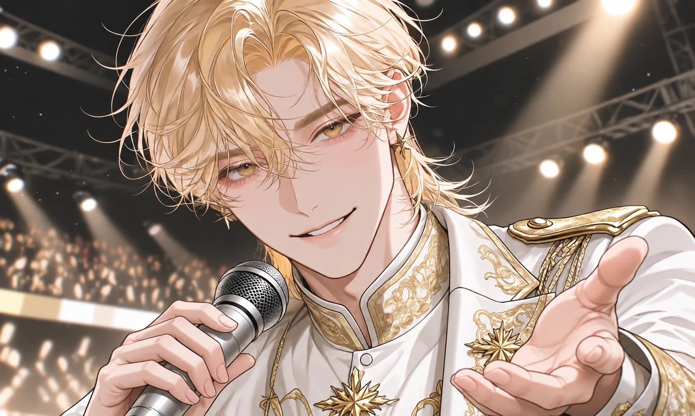

YO AMAGI天城 耀

Center / Lead Vocal王道アイドル
君にだけ、
PROFILE
華やかな美貌と
19歳で事務所に所属し、22歳でLUXデビュー。
25歳で大型アリーナツアーを成功させ、現在は音楽番組、CM、ドラマ、バラエティなどで活躍する。
人懐っこく、
- 年齢
- 27歳
- 身長
- 183cm
- メンバーカラー
- Champagne Gold
- 趣味
- 映画鑑賞、
ドライブ - 好きなもの
- ファッション、
香水 - 特技
- 歌唱、
ダンス、 ファンサービス